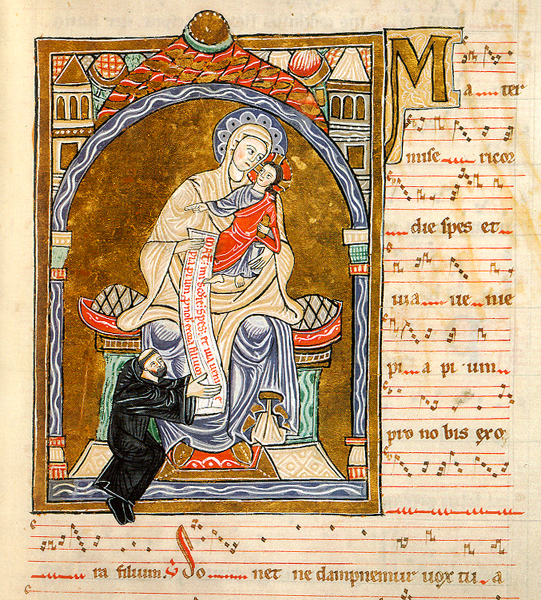

Early Abbots of Cluny
Abbots (note: the years refer to their time as
abbot, not their lifetime):
| Berno (910-927)
Odo (927-942) Aymar (942-965) Mayeul (965-994) Odilo (994-1048) Hugh (1048-1109) Pontius de Melgueil (1109-1122) Hugh II (1122) Peter the Venerable (1122-1156)
|
 |
| Peter the
Venerable at the feet of the Virgin, from Bibliothèque Nationale ms. lat. 17716, c. 1189 |